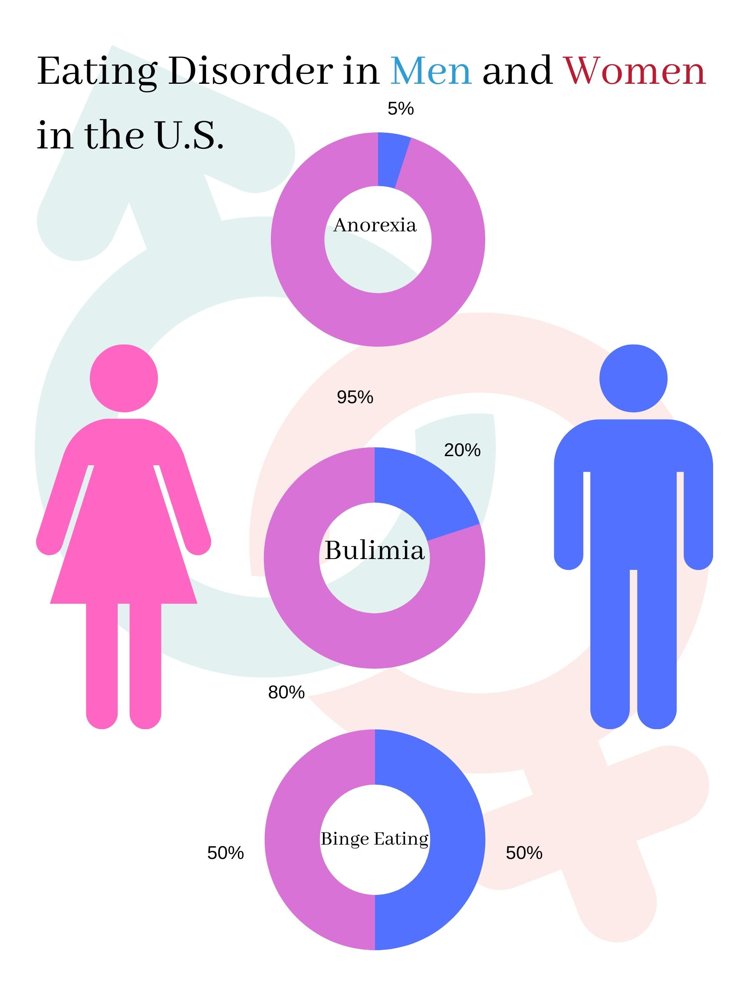
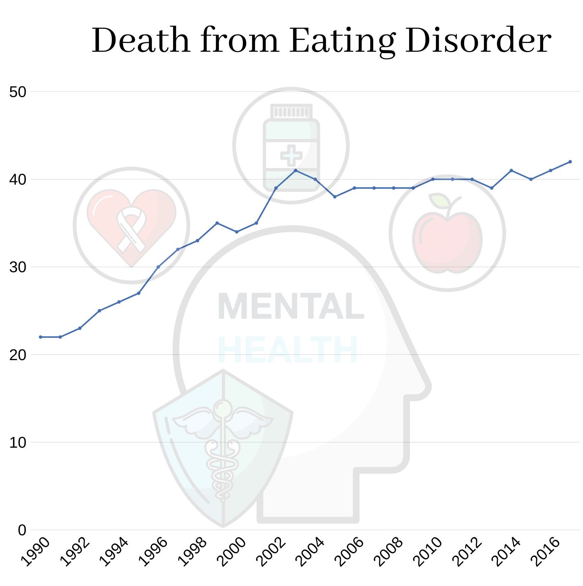
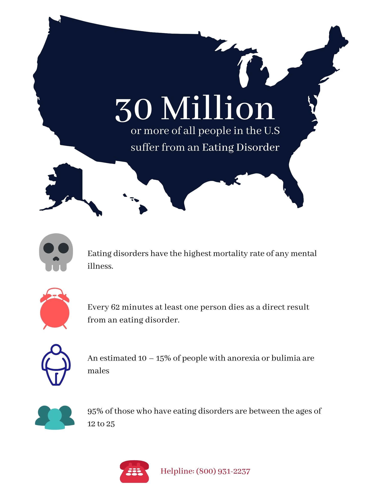

Eating disorders are only a more recently recognized medical condition. Originally eating disorders were seen through a religious lens and often part of extreme religious practices. Over time as medical science developed, it began to gain recognition as a medical condition, but even then the root cause was misdiagnosed. It wasn't until more recently that eating disorders have been diagnosed as psychological conditions and effective treatment has become availabile.
The Rise and Prevalence of Eating Disorders in the U.S.
Middle Ages: Self-starvation as a religious act
Self starvation was initially seen as a way to get closer to God and achieve spiritual pureness.
1689: Richard Morton labels Anorexia as a medical condition
During this time there was a shift in thinking to view Anorexia from a medical view. Richard Morton was the first to label Anorexia as such.
20th Century: Parentectomy considered an appropriate treatment
Removing a child from their parents was considered a useful treatment option since it was believed that the disorder was caused by their parents.
1930s and 1940s: Eating disorders recognized as psychological conditions
There was a shift in focus from viewing eating disorders as a physiological condition to a psychological condition. This changed the course of modern study for eating disorders and better targeted the root source.
1980: DSM adds an eating disorders section
Eating disorders become a diagnosable mental health condition listed in the Diagnostics and Statistical Manual of Mental Disorders.
1987: Bulimia is listed as a separate disorder in the DSM
This recognition meant that individuals with Bulimia would be able to receive a different diagnosis with different treatment rather than being lumped into a generic eating disorder treatment plan.
2013: Binge Eating is listed as a separate disorder in the DSM
Binge Eating is the most prevalent eating disorder in the U.S. This recognition was significant as this binge eating is far different from Anorexia and Bulimia and this allows a broader categorization for recognizing symptoms of eating disorders.
Many believe eating disorders affect mostly women, but today 10 million men in the U.S. also have eating disorders. Modern fashion sense glorifies a skinny body type for both men and women, so people tend to maintain their weight or lose weight even though they might already be underweight. This trend is seen most amongst girls between 14 to 25 years old. These young women care a lot about how others perceive them and believe a skinny body will give them confidence.

However, obsession with body image can cause one to stray from a healthy diet into a severe eating disorder. These are serious medical conditions which if left undiagnosed can lead to severe medical issues or even be fatal.
Eating disorders are on the rise around the world and this growth is often attributed to a combination of beauty standards and the spread of globalized, easily-accessible media. In a study done in the UK, more frequent Facebook usage was linked with greater disordered eating compared to alternate internet activity.
Today, Anorexia is listed as the most fatal mental disorder with a 10% mortality rate.
Eating disorders are on the rise around the world and this growth is often attributed to a combination of beauty standards and the spread of globalized, easily-accessible media. In a study done in the UK, more frequent Facebook usage was linked with greater disordered eating compared to alternate internet activity.
Today, Anorexia is listed as the most fatal mental disorder with a 10% mortality rate.

Eating disorders are a serious and widespread medical condition that deserves more awareness. “In the United States alone, an estimated 20 million women and 10 million men have or have had an eating disorder at some point in their life.” Also, “Every 62 minutes at least one person dies as a direct result from an eating disorder.” The number of people dying from eating disorders is still increasing. This social issue affects the whole country and Chicago is no exception to that.

Sourcees:
www.therecoveryvillage.com
www.anad.org
www.nimh.nih.gov
www.anorexiabulimiacare.org.uk
www.ourworldindata.org
www.therecoveryvillage.com
www.anad.org
www.nimh.nih.gov
www.anorexiabulimiacare.org.uk
www.ourworldindata.org